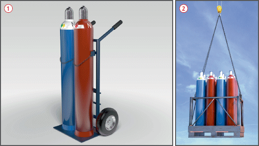
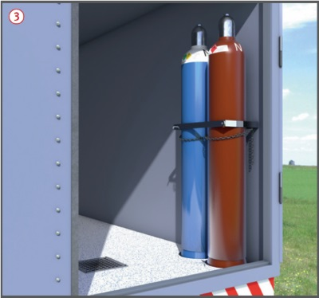

oder Transportgestelle
oder Transportgestelle  verwenden.
verwenden.
Transport von Druckgasflaschen |

oder Transportgestelle verwenden.| Kleine Mengen und Faktoren für Stückgutbeförderung | |||||
| Stoffe/ Zubereitungen |
Kleinmengen (kg netto bzw. Fassungsvolumen der Gasflasche) und Faktoren für Stückgutbeförderungen | ||||
| Klasse | Klassifiz. code |
UN-Nr. | Bezeichnung Faktor |
333 3 |
1000 1 |
| Klasse 2 | 1 O | 1072 | Sauerstoff | ● | |
| 1 F | 1049 | Wasserstoff | ● | ||
| 2 F | 1965 | Propan | ● | ||
| 2 F | 1965 | Flüssiggas | ● | ||
| 4 F | 1001 | Acetylen | ● | ||
|
Beispiel: Rohrleitungsbauer transportieren auf der Ladefläche eines Doppelkabinen-Transporters 40 l Sauerstoff (Klasse 2, UN-Nr. 1072) x 1 = 40 8 kg Acetylen (Klasse 2, UN-Nr. 1001) x 3 = 24 33 kg Propan (Klasse 2, UN-Nr. 1965) x 3 = 99⁄ 163 163 < 1000, also Kleinmengenbeförderung. |
 .
.
07/2021